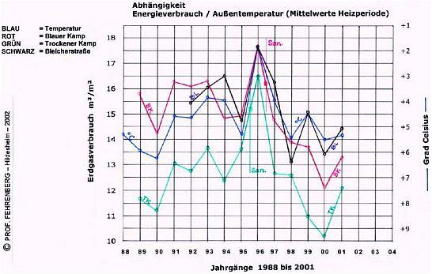

🠔 Zur Übersicht: Energiesparen
Wärmedämmung oder -speicherung, Witze der etablierten Bauphysik?
Es gibt bisher keinen glaubwürdigen Beleg, geschweige denn Nachweis am Objekt, daß sich durch nachträgliche Wärmedämmung wirklich nennenswerte Energie sparen ließe.
von Konrad Fischer
Energiesparen und Wärmeschutz am Altbau 5
Von der Intelligenz moderner Baumethoden/Haustechnik/Schimmelpilzzüchtung usw. Wissenschaftsdogmatik am Bau und in den Klima-Simulatoren
Es gibt bisher keinen glaubwürdigen Beleg, geschweige denn Nachweis am Objekt, daß sich durch nachträgliche Wärmedämmung wirklich nennenswerte Energie sparen ließe. So äußern sich maßgebliche Vertreter aus Bundesministerien, der Erdölindustrie, die kleinen und großen Vermieter (hinter vorgehaltener Hand, weil sie so arg gerne die Modernisierungsumlage kassieren, egal, wie wenig der Mieter nach Dämmung spart) und Beobachter der Dämmszene. Selbst am Neubau hilft nur das Herausrechnungen angeblicher Lüftungs- und Brauchwasserverluste, mit Niedrigverbräuchen der Heizanlage zu prahlen. Oder die Bude ist so leicht, daß sie der nächste Wind wegwehen kann. Wenn es wirklich gelingt, die Warmluft einzusperren und die LEichtbude schnell zu erhitzen: um welchen Preis? Sind hohe Klimaanlagen/Wärmerückgewinnung-Stromkosten bzw. Feuchtebelastung des stickigen Wohnklimas und die labile und feuchteanfällige Bauklapperatistik (vgl. Enstegs-Skandal der Dämmbuden in Schweden) wirklich so dolle Werbeargumente? Nicht umsonst sind über 60 Prozent der Bauprozesse Schimmelstreit.
Krebsrisiko durch Wärmedämmung? Lesen Sie auf diesem Link weiter...

Das alles ist nun schon lange kalter Kaffee:
Von dem Bundesverband der Ziegelindustrie liegt mir die schon angegraute Pressemitteilung 9/1983 "Zweifel am k-Wert genährt" vor, aus der ich zitiere:
_
"Der k-Wert der Wand ist keine zuverlässige Größe, aus der allein auf den Energieverbrauch geschlossen werden kann. Zu diesem Ergebnis kommt der Bundesverband der deutschen Ziegelindustrie e.V. nach dem von der Bundesregierung durchgeführten THERMA-Wettbewerb, dessen Auswertung jetzt abgeschlossen wurde. [Es wurden] mehrgeschossige Häuser ... nach einer zusätzlichen Außenhaut-Dämmung über sechs Jahre auf ihren Energieverbrauch hin beobachtet.
Dabei konnten in keinem der acht vollständig ausgewerteten Objekte die vorher errechneten Energieeinsparungen erreicht werden. Zwar reduzierte sich der k-Wert in fast allen Fällen erheblich (bei fünf Häusern auf 35% der früheren Werte und weniger), der tatsächliche Energieverbrauch stand dazu jedoch durchweg in krassem Mißverhältnis. Die Messungen ergaben Einsparungen auf 93 bis 67% des früheren Verbrauchs. Auch das nach den Berechnungen gemäß der DIN 4701 prognostizierte Sperrziel konnte in keinem der Häuser erreicht werden.
Dementsprechend negativ ist das Kosten/Nutzen-Verhältnis zu bewerten. ... In drei Fällen Amortisation nach 22, 27 und 43 Jahren, in fünf Jahren überhaupt keine. (MEP)"
_
Dazu im Gegensatz unterstellen Rechenergebnisse nach DIN 4108 und EnEV, daß WDVS Energie sparen könne:
"Die im Vergleich zum Neuverputzen des Gebäudes durch Aufbringen des WDVS erreichte drastische Reduktion des Jahresheizwärmebedarfes führt zu einer entsprechenden Verringerung des Primärenergiebedarfes. Die über 40 Jahre eingesparte Menge von umgerechnet ca. 65.000 l Rohöl entspricht der Menge an Rohöl, die ausreicht, um zwei Tanklastzüge zu füllen. [...] Stellt man einen Bezug zu den Einsparungen in der Nutzungsphase her, so sind die Umweltbelastungen in der Herstellung nahezu vernachlässigbar, und WDVS stellen damit eine sinnvolle Investition in eine lebenswerte Umwelt dar." (Dipl.-Phys. Michael Betz, Dipl.-Ing. Johannes Kreißig, Dipl.-Kfm. Hartmut Schöch, Institut für Kunststoffprüfung und Kunststoffkunde (IKP) Uni Stuttgart: Wärmedämm-Verbundsysteme - eine Öko-Bilanz, in: bau-zeitung 53 (1999) 10).
Alles nur Berechnungen bzw. fehlgesteuerte Computersimulationen. Die bittere Wahrheit zeigt das Förderprojekt der HASTRA (Hannoversche Stromversorgungs-Akiengesellschaft), die supergedämmte und solarversorgte EXPO-Muster-Niedrigenergiehaussiedlung am Kronsberg, Hannover: Die Mieter bekamen eine Warmmiete von 9 DM/qm versprochen. Dann setzte die tatsächliche Heizkostenabrechnung ein. Gigantische Nachzahlungsforderungen waren die logische Folge des k-Wert-Schwindels (heute: U-Wert-Schwindel). Und die ökoreligiöse Presse verbreitet dazu (Deister Anzeiger der Hann. Allg. Zeitung 3.8.02): "Hunderte von Haushalten mussten für Energiekosten nachzahlen, weil sie die Gebäude falsch nutzten und ihre Anlagen nicht optimal eingestellt hatten."
Dumm gelaufen für die betroffenen Ökojünger. Den Mietern wurden so gut wie 'keine' Heizkosten versprochen. Die Stromversorgung wollte damit prahlen, daß bei fast 0 Heizenernergiebedarf Stromheizung die vorteilhafteste Variante ist. 2000 ist die erste Heizkostenabrechnung eingetroffen: Wie im ungedämmten Wohnblock, oder gar noch schlimmer. Die Mieter zetern. Die Abrechnungsdaten werden unter Verschluß gehalten. Die Vermieter flüstern: Wir geben modernisierten Mietern absichtlich gar keine Möglichkeit, ihre Nebenkostenabrechnung mit unmodernisierten zu vergleichen. Sonst würde jeder wg. Beschiß klagen. In der Hannoverschen Allgemeinen am 16.5.03 dann sehr ironisch (Überschrift, hier ausgelassene Lobhudelei kumuliert in der zitierten Apotheose):
"Maßstab Kronsberg Europa staunt über die Expo-Siedlung
... Auch die Qalität guter Dämmung und der Heizungs- und Lüftungstechnik mache sich bemerkbar - allerdings nicht im Portemonnaie: "Wir hatten uns einen besseren Einspareffekt versprochen. Der ist eindeutig nicht eingetreten." med"
Auch die Auswertung von 100 Niedrigenergiehäusern in Hessen zeigte: Bis zu 200 Prozent sind die abgerechneten Heizkosten höher als berechnet. In Vorzeige-Passivhäusern nach Feistscher Bauart wird in kalten Wintern heimlich mit mobilen Flüssiggas-Heizgeräten nachgeholfen (tel. Auskunft vom Lieferanten: Nachtanlieferung, damit die neidische Nachbarschaft im Massivbau feste neidisch bleibt), was der Strom nicht schafft. In NRW prozessiert man, da der Einzug in das perimetergedämmte NEH-KS-Hüttchen unterblieb, weil es die Niedrigenergietechnik nicht warmkriegte.
Wie das Katastrophenergebnis der GEWOS-Studie (wissenschaftlicher Vergleich mehrerer Großwohnungsbauten identischer Heizung mit und ohne nachträglicher WDVS-Dämmung) für die U-WERT-Apostel-Dämmbuden brauchen demnach bis über 15% mehr Heizenergie als nackte Massivbauten, die Rechenmystik findet in Phantasia statt - im Nachhinein schöngeschrieben wird, ist hier zu lesen (Uni Kassel/Prof. Hauser-"Forschung"!!).
Dämmstoffpropaganda, Dämm-Mythen und andere Märchen
Nach etwas saftigerer Aufklärung diverser Medien zu allerlei Nachteilen des Dämmwahns erblicken insbesonders seit 2013 mehr und mehr im Hinterzimmerdunkel zusammengeschusterte und offensichtlich voneinander abhängige Schriften das Tageslicht, die dem geneigten, aber auch dem dank der pöhsen Medienhetze leider arg verunsicherten Leser seine bösen Irrtümer, Vorurteile, Falschannahmen und sonstige Antidämmressentiments mit der geneigten Hilfe käuflicher Schönschreiberlinge austreiben sollen. Weil ja alle Vorbehalte technischer, wirtschaftlicher und naturschützerischer Art komplett falsch seien. Hierzu nur ein paar Beispiele zur Ergötzung der wahrheitshungrigen Leserschaft als Downloadlink (Tabletten gegen Reisekrankheit bitte vor dem Konsum bereitstellen):
Deutsche Umwelthilfe DUH (9/2013): Hintergrundpapier Gebäudesanierung: Energetische Gebäudesanierung? Ja bitte! Deutsche Umwelthilfe DUH (11/2013): Energetische Gebäudesanierung Wider die falschen Mythen 1 Deutsche Umwelthilfe DUH (8/2014): Energetische Gebäudesanierung Wider die falschen Mythen 2 Klimaschutz- und Energieagentur Baden-Württemberg GmbH KEA mit Fraunhofer IBP, Energieinstitut Voralrlberg, Karlsruher Institut für Technologie KIT, ebök Planung und Entwicklung GmbH (4/2014): Über den Sinn von Wärmedämmung - Argumente zur Überwindung von Missverständnissen - Positionspapier Verbraucherzentrale NRW (8/2014): Schimmel, Algen, Atemnot: Irrtümer und Vorurteile beim baulichen Wärmeschutz" Verbraucherzentrale RLP (9/2014): Wärmedämmung - spricht was dagegen? Antworten auf die zehn häufigsten Fragen"
Wenn wir uns die bösen Irrtümer, denen der dämmunlustige Verbraucher aufgesessen ist, mal genauer ansehen, geht es im Wesentlichen um:
- Wärmedämmung und Schimmelpilz
- Atemnot der gedämmten Fassade
- Probleme der Deutschen als Dichter und Dämmer
- Algenplagen auf Dämmfassaden
- Wärmewegspeichern statt Wärmewegdämmen
- Sonnenblocker Dämmfassade
- Energiesparverrechnung
- Dämmung verarmt Hausbesitzer und Mieter
- Dämmfassaden als tödliche Brandfalle
- Polystyroldämmung als Sondermüll
- Dämmstoffproduktion schluckt mehr Energie, als sie spart
- Dämmfassaden verschandeln Bau und Stadt
- Bestochene Politmarionetten der Lobbykratur erlassen Energiespar-, Klimaschutz- und Dämmstoffschwindelgesetze gegen den Bürger.
Natürlich gibt es da noch Weiterungen, aber das Wichtigste ist von 1-13 bestimmt dabei. Und jetzt soll alles daran falsch sein, weil halt die dummen Bürger von noch dümmeren Journalisten hereingelegt oder dummerweise in die Irre geführt werden? Ach so. Und da hilft natürlich nur ehrlichste und gewissenhafteste Aufklärungsarbeit, der sich die o.g. Herausgeber dank ihrer geradezu übergroßen Weisheit und Güte in allervornehmster Weise bis zur Selbstaufgabe widmen. Wie gut, Danke, Danke, Danke!!! Und Viele, wirklich Viele helfen dabei auf ebenso uneigennützigste Weise mit. Nicht nur Energieagenturen und staatlich alimentierte Verbraucherschutzorganisationen und durchökologisierte Polithansln und Politgreteln. Sondern auch die Werbeikone "par excellence" und schlechthin, der Wickert Ulrich, ein abgehalfteter Tagesschausprecher, an den sich manche von uns Älteren tatsächlich noch nebulös erinnern. Auch an den enttäuschenden "Ethik-Uli": Wer kann, nimmt mit - Der Werteverlust des Ulrich Wickert
Dabei werden Plattheiten mit angeblichen Fakten in buntester Weise durchgequirlt und in immer neuer - gleich schal verwürzter - Sprachsoße neu eingekleidet, sodaß man spätestens nach dem etwa zweiten Positionspapier der Hirnerweichungstextung doch überdrüssig werden könnte, wenn man es nicht als buddhistische Kontemplation oder psychopathologische Fallstudie zur käuflichen Schmierkunst "Wes Kot ich eß, des Tod ich schreib" begreift. Und sich daran ergötzt, wie der Produktschwindel nach umsatzmäßigem Höhenrausch nun selbst seinen Untergang herbeipubliziert.
Lassen Sie uns also gucken, was denn wirklich an der famosen Reklamepropaganda der dämmlobbyistischen Marketingprofis dran ist, wonach der Verbraucher zumindest irregeführt oder gleich dolle dumm ist - schön der Reihe nach:
Fangen wir mal von Anfang an. "Wärmedämmung - spricht was dagegen?" der Verbraucherzentrale/Energieberatung RLP startet gleich volle Pulle mit:
"Eigentlich bietet die umfassende Wärmedämmung eines Hauses viele Vorteile:
Einsparung von Energie und Heizkosten Werterhalt oder sogar Wertverbesserung des Hauses Erhöhung der Behaglichkeit im Haus."
Ein dreifaches Oha!, dieser Superstart für Leichtgläubige - und das zieht sich dann als Prinzip durch das ganze Dämmpamphlet. Denn wo wäre denn auch nur ein winziger wissenschaftlich belastbarer Beweis für "Einsparung von Energie und Heizkosten" dank Fassadendämmung? Bisher liegt hier nichts vor und auch die Bundesregierung konnte dem Bundesrat hierzu trotz Aufforderung im Zusammenhang mit der Einführung der Energieeinsparverordnung EnEV keinen einzigen Nachweis (!) liefern. Lesen Sie dazu weiter hier: Keine Energieeinsparung durch Fassadendämmung.
Und die Wertigkeit des aus unabänderlichen bauphysikalischen Gründen bald aufgenäßten, veralgten und verpilzten, verfrosteten und vereckelten Dämmspecks? Der normgerecht an die Altbaufassade geschnallt die ehemals großzügige Befensterung zur romanischen und mietminderungsberechtigenden Schiessscharterei mutiert und hinter dem Tunnelblick erhöhte Stromkosten für die nun auf Dauerbetrieb umgeschaltete elektrische Raumbeleuchtung erzwingt, wenn man nicht an der Scheißschwartenkrankheit vertrüben will und deprimiert als dauerumnachteter Suizidler die biozid vergiftete Brenndämmfassade abfackelt? Hierzu fällt den Dämmperversen des angeblichen Verbraucherschutzes folgende Tirade ein: "Negativ in die Schlagzeilen gekommen sind Wärmedämmungen durch Schäden in Folge von Planungs- oder Ausführungsfehlern. "Richtig ausgeführt", weiß der Experte [Martin Brandis, Dipl.-Ing. Maschinenbau, Referent Checkpoint Energie der Verbraucherzentrale], "verbessern Wärmedämmungen wirksam den Wärmeschutz des Gebäudes, ohne dass Mängel entstehen." Diese angesichts aller schon allzuoft nachgewiesenen Systemfehler der Dämmschwarten geradezu idiotische und einseitige Schuldzuweisung eines berufsverirrten Maschinisten an das ehrbare Bauhandwerk, Architekten und Ingenieure steht so tatsächlich in der Pressemitteilung vom 22.09.2016 "Wärmedämmung lohnt sich doch! Verbraucherzentrale berät kostenlos zu Wärmeschutz und Dämmstoffen"! "Wieviel mag die Verbraucherschutzzentrale für dieses vorsätzlich Verbiegen der Bauwahrheit von den Dämmproduzenten eingesackelt haben?", fragt sich der unbefangene Leser solcher Frechheiten. Wo bleibt der Aufschrei der vom "Verbraucherzentrale Bundesverband e.V." Verleumdeten und - angesichts der dort außerhalb der gesetzlichen Honorarordnung für Architekten und Ingenieure durch Kostnix(!)-Bauberatungen auch wirtschaftlich Geschädigten und ihrer schönen (und offenbar sinnlos teuren) Kammern und Standesvertreter? Wie immer ungehört verpufft? Wieder mal bewahrheitet sich damit das gute alte Sprichwort, daß "was nix kost, auch nix taugt." Was nicht als Ehrenrettung der teuren Kammern mißzuverstehen ist. Denn auch was kost, kann rein garnix taugen, gelle, meine lieben Geprellten hier, dort und überall?
Und was soll nun behaglich sein daran, daß dank fehlender Solarzustrahlung die ehemalige Fassadenaußenseite - jetzt hinter Dämmschwarte verschattet und deswegen immer kühler als die ungedämmte Fassade - ein dank erhöhter Temperaturdifferenz von Innen zu Außen erhöhter Wärmestrom für mehr Heizenergieabfluß sorgt, wie es alle bisherigen Bauforschungs-Messungen an Dämmfassaden belegen? Also tendenziell eine kühlere Innenwandfläche erzwingt, was dann sommers auch als "Hitzeschutz durch Fassadendämmung" dolle angepriesen wird. Übrigens ausgerechnet auch von der unabänderlich dämmhörigen Verbraucherzentrale für die die geheimnisvolle Dämmstoffkleisterei offenbar die ultimative Wunderwaffe gegen alle klimatischen Übel zu sein scheint: Verbraucherschutz: "Sommerhitze: Gute Wärmedämmung hilft"
So fängt es also schon mal an, was die wohlbestallten Dämmscharlatane zu bieten haben. Und wie geht es weiter? So:
1. Wärmedämmung und Schimmelpilz
Hier erklärt "man" dem guten Verbraucher, daß sein Schimmel neben Wasser vor allem mal den Taupunkt braucht. Stimmt. Und behauptet, daß hinter außengedämmten Fassaden nach dem U-Wert-Rechenmodell - meist reich und bunt bebildert präsentiert - doch erheblich wärmere Wandoberflächen sein sollen und schon deswegen weniger Taupunkt und weniger Tauwasser und folglich weniger Schimmelpilzwachstum. Stimmt immerhin rechnerisch, bei Witterungsperioden und bei Fassadeninnenseiten mit wenig solarem Strahlungsangebot. Das Rechenmodell ist aber ein Stationäres und gilt definitionsgemäß nur im Beharrungszustand. Denken wir uns eine dauerkaltes Kühlhaus bei ausgeknipsten Lampen und einer Normfeuchte im Baustoff. Wo gibt es das da draußen am Bau? Eben. Wenn ich abends mit einem Kontakt- oder Infrarot-Thermometer bei einem am Tage sonnenbeschienenen Mauerwerk mit und ohne Fassadendämmung außen die Mauerwerksoberfläche messe, welche Fläche wird wohl wärmer? In den vielen Monaten mit gutem Wärmestrahlungsangebot aus direkter und diffuser Sonnenstrahlung sowie auch aus Umgebungsstrahlung, denken Sie an eine solar aufgeheizte Asphaltoberfläche - kann das Strahlungsangebot vor allem von Massivwänden bestens genutzt werden und auch den Zuheizbedarf absenken. Massivfassaden können also nächtens auch durch eingespeicherte Solarwärme "glühen", was dann Thermografen auf ihren Wärmebildern so trefflich als "energetisch nachteilig" und "schlecht gedämmt" in Szene zu setzen wissen. Doch tagsüber glühen die Dämmfassaden, dämmen aber ihre extreme Oberflächenwärme vom Eindringen in die Fassade und Nutzbarwerden für die Raumwärme erfolgreich ab. Warum reden die gestrengen Herren und Damen EnergieberaterInnen nicht auch mal darüber? Und wer könnte das angemssen bilanzieren? Die U-Wert-Theorie bestimmt nicht! Um aber dem Schimmelpilz den Garaus zu machen, sollte logischerweise weniger der Taupunkt und die Wanddämmungsfrage diskutiert werden, sondern die erfolgreiche Ablüftung der ganz normalen Nutzerfeuchte aus Duschen, Baden, Pflanzen- und Haustierhaltung, Wischen, Kochen, Atmen usw. Denn ohne Feuchte kein Schimmel und ohne das im Zuge der Dämmdichtnarretei übertrieben dichte Fenster trotz aller Stoßlüftung auch nicht.
2. Atemnot der gedämmten Fassade
Meine Wand muß atmen können, in einer Plastetüte (Plastiktüte) will ich nicht wohnen. Oh, wieviel Häme hat diese vereinfachende Darlegung des nach gesundem Wohnen strebenden Otto Normalverbrauchers in der Dämmszene schon hervorgerufen. Am liebsten unterstellen die Dämmfreunde ihren ärgsten Widersachern aus der Technikszene diese Einfachaussage, um sie dann mit Glanz und Gloria in immer heftigeren Galoppattacken höhnischst niederreiten zu können. So einfach kann Siegen sein. Da doch Wände trotz Pettenkofer tatsächlich nicht "atmen" können. Doch was ist eigentlich wirklich gemeint, wenn einfache Leute von "atmenden Wänden" schwärmen?. Doch keine Luftdurchlässigkeit der Wand! Und auch Dampf kann - Glaser hin oder her - doch nicht in irgendwelchen nennenswerten Mengen hindurch die ganze Mauer! Es geht nämlich um das flüssige Wasser, das im Taupunkt oft genug im Porensystem knapp hinter der Bauteiloberfläche anfällt bzw. ausfällt und das in das Kapillarrißnetz der Wandoberfläche innen und außen eindringt und dann mangels Kapillarentfeuchtung der kunstharzbeschichteten und selbst nicht kapillaraktiven Dämmschäume, Dämmfasern, Dämmschnipsel und Dispersionsanstriche innen und außen nicht mehr rauskommt und folglich die Wand von innen UND außen auffeuchten läßt. Und zwar bis zur Verrottung innen und außen oder bis die naßschwere Dämmschicht auf den Gehsteig fällt und alle Dämmdübels dank innerer Nässe abgerostet sind. Oder eben alles grausam schwarzgrünrotgelbbraun veralgt ist - mit reichlich aufwachsenden Schimmelpilzkulturen. Doch davon keine Rede.
Und innen wird die hermetisch raumdichtende Dampfsperre seitens der Dämmprofis beschworen. Und verschwiegen, daß diese im Taupunktfall eine Kondenswasserfalle ist, die zu in den Dämmstoff und sonstwohin rinnenden Wasserfällen führt - mit nachfolgender Schimmelpilz- und Schwammbildung. Todsicher, da all' den schönen Klebstrecken, die dieser hermetischen Dichtheit von kunstverharzten Dampfsperrfolien oder Dampfbremsfolien oder intelligenten Folien, Bremsen und Sperren leider, leider keine verläßliche Ewigkeitswirkung beschieden ist. Weil Klebstellen automatisch verspröden und die thermisch-hygrische Belastung von Baukonstruktionen zur Bewegungsfreude führt, die noch jede Klebnaht auftreibt. Und dann kommt der Wasserfall. Den man leider erst merkt, wenn es aus der Dämmebene stinkt oder nässend tropft oder gleich der Hausschwamm seine Fruchtkörper austreibt.
Dazu wäre auch noch anzumerken, daß Dämmstoffe und/oder manche ihrer Bestandteile sich in unterschiedlichster Manier auf und in die Atemwege legen können, notfalls bis in die Blutbahn. Wir denken hier an lungengängige Dämmfasern, -schnipsel und -stäube, an die toxischen Brandschutzmittel, an ausgasendes Styrol und Bromide und andere Rezepturbestandteile zur Herstellung oder Vergiftung oder als Brandschutzmittel oder wer weiß was. Und wenn naß und abgesoffen, an die unterschiedlichsten Schimmelpilzsporen, die dann die Wohnraumluft bevölkern können. Wohngesundheit fördert das dann nicht so sehr, oder?
3. Probleme der Deutschen als Dichter und Dämmer
Hier versucht man dem durchschnittlich doofen Deutschen einzureden, daß ja unkontrollierte Fugen in seiner Bude der Graus schlechthin seien und deswegen eine blowerdoorgesicherte Dämmdichtbude mit elektrischer Zwangslüftungskeimschleuder das Mittel der Wahl sei, um gut und energiesparend in jeder isolierten Miefbude zu überleben. Stalingrad-Motto: "Lieber erstunken, als erfroren."
Nun ja. Klar will niemand zugige Hechtsuppenwohnungen. Doch was als Zug peinlich kalt am Fuße der Dame und als heißverstaubter Zimmertaifun in Nasenhöhe sehr schmerzlich empfunden wird, ist in Wahrheit oft genug die Folge von depperter Nachtabsenkung im Auftrag des Geizes oder des Energiesparfeldwebels und eines demzufolge verstärkten Konvektionseffekts der Heizanlage, die allmorgendlich, vielleicht sogar allabendlich extreme Heizwinde in der unterkühlten Bude herumwirbeln muß, die der dank professioneller Heizungssteuerungsreklame leicht unterbelichtete Heizer mittels unterbrochenem und nicht stetigem Heizbetrieb herumpfeifen läßt. Um über 30 Prozent Heizenergiemehrverbrauch als nötig der ungedämmten Bude zuzuschreiben. Soviel dazu.
Und wenn die notwendige Fensterfugenlüftung stetig funktioniert, hält das den Schimmelpilz fern. Wenn aber durch Kaltwind-Stoßlüftung das vorher in alle Bauteile, Möbel und Textilien hineinkondensierte Tauwasser noch weiter abgekühlt und nicht getrocknet wird, ebenso die Problemstellen in Fensternähe brutal runtergekühlt, damit sie beim Wiedererwärmen nach der Stoßlüftung noch besser und noch mehr Tauwasser schlucken können, dann, ja dann ist das hehre Ziel der Schimmelpilzzucht an allen Ecken und Enden erreicht. Und dagegen hilft nun wirklich keine Fassadendämmung. Oder doch?
4. Algenplagen auf Dämmfassaden
Ja, die Algen überall. Erstmal sind die sauberen Lüfte schuld. Das hat die Dämmforschung erweisen. Weil nämlich die Schlotfilter allerorten das Algenwachstum herrlich befördern. Mittels Reinluft. Und Algen kann man auch sonstwo auf Fassaden finden, ohne Dämmhaut. Stimmt natürlich. Weil dort kunstharzversoßte Industriefarben druffgeschmiert wurden, die den Regen im Kapillarrißnetz reinsaugen, aber über die Fläche nicht wegtrocknen können und dank lecker Kunstharz gute Algenbrutflächen sind. Doch jetzt zur Dämmfassade selbst. Die muß nämlich veralgen, egal was draufgeschmiert wird. Weil sie eben allnächtlich auskühlt und dabei oft genug Tauwasser reinsäuft. Siehe oben. Dagegen hilft eben nix oder Giftfarben nur allzu kurz. Und das Unterkühlen der Dämmschwarten kommt eben nicht davon, daß sie so erfolgreich den Wärmestrom von innen abdämmen, wie es in geradezu perfider Gemeinheit von manchen Schreiberlingen in die Welt gesetzt wird, gerne auch als Falscherklärung bei den sich hell abzeichnenden Tellerdübelköpfen unter der Putzschicht (Leopardeffekt, Marienkäfereffekt, ...), deren Metallschraube von innen angeblich dolle Raumwärme absaugen soll, sondern von der mangelnden Speicherfähigkeit der Wärmedämmstoffe. Die ihre oberflächige Extremhitze, die sie tagsüber mangels Leitfähigkeit nicht in das Mauerwerk abgeben können, dann allnächtlich ruckzuck verlieren und dann ebenso extrem runterkühlen. Und ja, die Tellerdübel können Wärme wesentlich besser speichern als die Dämmumgebung. Und versauen deswegen nicht so schnell. Letztlich aber doch. Augen auf beim Dämmstoffsauf!
5. Wärmewegspeichern statt Wärmewegdämmen
Hier tobt ein alter Streit um das bessere Bauen. Massivziegelhaus (und hier nicht der errötete Porenschwamm namens Porenziegel etc. gemeint!) kontra Dämmstoffbaracke. Freilich fehlt dann hier und da der Durchblick dazu. In aller Kürze: Ziegelbau hält grundsätzlich länger. Und was benötigt mehr Heizenergie, um während des Winters auf 20 Grad geheizt zu werden und zu bleiben - ein Kubikmeter Blei oder einer aus Daunenfedern? Eben. Und wird es dem Bleiwürfel helfen, wenn man ihn teuer mit Dämmstoff von der Solarwärmestrahlung aus direkter Besonnung, diffusem Himmelslicht und der massiv übersehenen Umgebungsstrahlung abschottet? Na also! Und wie hat der Ritter seine meterdicke Burg wärmegedämmt, um den harten Winter zu überstehen? Mit Bären- oder Wildschweinfellbehang innen, mit gotischer Bohlenstubenverschalung, mit Brüssler Wandteppich namens Gobelin, mit Seidentapete, Ledertapete, Papiertapete und auch Leinwandbild auf Spannrahmen. Teils herrlich beschnitzt, bemalt, bezwirbelt als Fernsehersatz zum stundenlangen Reinglotzen. Doch nicht an der Fassade, sondern raumseits. Und ohne nennenswerte Taupunktverschiebung, da er seine überschüssige Feuchte beim alljährlichen Badezubervergnügen vor Weihnachten durch den Kamin weggelüftet hat. Der Rest ist am Einfachfenster abgeronnen und von der Kalkputzwand schadlos zwischengepuffert worden. Und im Schlafzimmer? Erst mit Holzluke verschließbarer Bettladen, dann Himmelbett mit Vorhang. Das mußte und konnte genügen, wenn das Waschwasser in der Kanne festfror. Von den kuscheligen zwei aufheizrelevanten Mägden schweigt des Sängers Höflichkeit, den heißen Bettziegelstein dürfen wir aber positivst erwähnen. Und später dann der Rohrmattenputz und die Sauerkrautplatte. Was die Putzhaut energiesparend und feuchtetolerant von der wärmeableitenden Massivwand abkoppelte. So blöd waren unsere Vorfahren als nicht, wie wir.
6. Sonnenblocker Dämmfassade
So viel soll die gnädigerweise zugestandene Einspeicherung der Solarenergie in den unverdämmten Massivbau also nicht bringen. Zahlen bleibt man da lieber schuldig. Was wärmend reinkommt, plumpst demnach auch gleich oder mindestens schnellstens abkühlend vorne wieder raus aus dem Büdli. Wenn es nach den Dämmaposteln geht. Wahre Beweise mit Gültigkeit im Jahreskreislauf für die von ihnen herbeigeschmierfinkte Nullwirkung bei der Energiebilanz bleiben sie freilich schlauerweise schuldig. All' die gegenteiligen Langzeitmessungen der Bauwissenschaft von Finnland bis Italien, die den Zuheizungseffekt mittels solar je nach Jahreszeit und Sonnenscheindauer bzw. verfügbarer Umgebungsstrahlung - Nordfassaden werden ja von vor allem im Stadtraum nahegelegenen Südfassaden heiß bestrahlt - teils stark verringertem Temperaturunterschied Innen-Außen belegen, werden kleingeredet, verschwiegen oder - wenn es halt drauf ankommt, gleich verheimlicht und seitens der drittmittelverseuchten Forschungsleiter gar abgestritten (schriftlicher Beweis dafür aus dem Fraunhofer-Institut für Bauphysik liegt vor). Das macht das Dämmärchen auch nicht wahrer. Egal, wie noch so seriös herumgesülzt oder gleich Gift und Galle verspritzt wird.
Die wahren Messungen an gedämmten und ungedämmten Fassaden sprechen dem raffiniert etablierten Dämmschwindel Hohn. Und vor allem! auch die betrügerischen Thermographieaufnahmen. "Wärmedämmung - was spricht dagegen?" der Verbraucherzentrale/Energieberatung RLP mißbraucht hierzu Wärmebilder eines unschuldigen Stadtturmes, der um 17 Uhr richtig glüht und dann um 22 Uhr nicht mehr ganz so dolle. Toll, toll, toll! Doch wo ist die Parallelaufnahme einer Dämmfassade, die am gleichen Standort tagsüber noch dollerer verglühen würde, so daß die brüchig-krustige Kunstharzputzschwarte - Wärmedehnfaktor ca. 1,5 - trotzig von der mit einem Wärmedehnfaktor von ca. 8-12 geradezu extrem wärmedehnfähigen Polystyrolunterlage über kurz oder gar nicht mal so lang abreißt, -beult und -schert. Und dank extremer Gegenstrahlung nächtens locker mal acht Stunden und länger den Taupunkt unterschreitet mit - in klaren Winternächten und mit über minus 50grädig tiefgefrostetem Himmelsgewölbe - geschwind bis zu 15 °C und mehr unter die Umgebungslufttemperatur abkühlt und dann tauwasserbereichert auffrostet oder -quillt. Und warum nur ein sonniger Februartag, wo doch in etwa zwei Drittel der Winterzeit bestens verwertbare Solarenergie nicht nur auf der Südseite verfügbar ist, daß die Kilowattstunden in eine wärmeleitfähige und wärmespeicherfähige Bauwerkshülle nur so reinwachsen und den Zuheizbedarf merklich mindert? Hier wird also durch Weglassen getürkt, daß sich die Styroporlügenbalken biegen. Das findet seine psychologische Rechtfertigung natürlich im werbenden Charakter der Dämmstoffpropaganda. Dafür braucht man geschulte Fachkräfte der gewissenlosesten Werbebranche fürs Schwindeln, Türken und Manipulieren und bestimmt keine Wahrheitssucher. Richtig interpretiert würde nämlich die über die ganze Nacht vorteilhafte, da sicher kondensat-, veralgungs- und zerfrostungsvermeidende Wärmeabstrahlung der tagsüber in der Massivfassade eingespeicherten Solarwärme sichtbar - im Unterschied zur heimtückisch absaufenden blauschwarzkalten Dämmschwarte, die tagsüber auch mal auf plus 80 Grad aufheizt und dann voller grundwasserverseuchendes Gift gepumpt werden muß, um ein paar Jährchen Algenfreiheit hinzukriegen. Bei gleichzeitigem Abschotten des Mauerwerks unter der maus- und ameisenhinterwohnten Dämmschwartenschattierung vor der zuheizungsverringernden kostenlosen Solarstrahlung.
Aus meiner im Januar 2018 begonnenen vergleichenden Forschung des Energieverbrauchs und des Temperaturverlaufs an Massivwand-Meßkisten mit Innendämmung, Außendämmung und ohne Dämmung ist die enorme Wirkung der Solarzustrahlung nachweisbar. Ebenso die Problematik der nächtliche Taupunktunterschreitung der Fassadendämmung und ihr extremes Heißwerden am Sonnentag. Auch die Dämmstrategie des Ritters mit Innendämmung erweist mit den vergleichsweise wärmsten Wandoberflächen während der Frostperiode ihre wohnbehagliche Überlegenheit gegenüber der außengedämmten Wand mit theoretisch gleichem U-Wert. Was den U-Wert in seiner Sinnhaftigkeit widerlegt. Alles weitere später nach Auswertung einer ausreichenden Meßperiode.
7. Energiesparverrechnung
Ja, ja, das kann schon vorkommen, meinetwegen auch hundertetausendfach von den berühmten Heizkostenabrechnern ISTA und TECHEM und der Cambridge-Studie und, und, und ... nachgewiesen. Man will ja nicht so aufwendig rechnen müssen, das kostet. Und diese Kosten will man dem armen Verdämmten doch nicht auch noch aufbürden, wenn schon das Gedämme so kost. Doch was ist schuld, wenn so arg sehr nach unten abweicht, was man dem ungedämmten Bau als Heizenergieverbrauch aufrechnet und so arg nach oben beim gedämmten? Genau! Es ist der geradezu idiotische Nutzer mit seinem "Nutzerverhalten". Und dafür einen englischen Begriff erfunden, dann glauben es alle (Deppen):
"Prebound-Effekt" - der unverdämmte Nutzer zittert geizverspart im fast unbeheizten kalten Haus herum, ein mickriges Wärmestübchen bei Kerzenlicht vielleicht gerade noch ausgenommen. Und dann der Verdämmte: Jetzt greift der "Rebound-Effekt" - alles wird vom Kartoffelkeller bis zur Dachspitz auf Tropenhitze hochgeheizt, weil ja vortrefflichst heizenergiesparendst gedämmt. Und deswegen berechnet der Energieberater das Ungedämmte mit zu hohem Verbrauch und das Gedämmte mit zu geringem Verbrauch im Verhältnis zu den gemessenen Tatsachen. Hinzu kommt noch der Dämmpfusch des üblichen Handwerkers, der eben fast grundsätzlich solche fugigen Löcher und ungelöste Wärmebrücken/Kältebrücken und aufgenäßte Fassadendämmhäute hinterläßt, daß kein Rechenprogramm der Welt seinen Murks richtig berechnen kann und beim Vergleich des Soll- zum Istverbrauch geradezu zwangsläufig versagen muß. Wobei das REchenmodell, daran wäre immer zu erinnern, ja genial richtig wäre, wenn die schnöde menschenverschuldete Wirklichkeit nicht wäre. Daß das Gerechne vielleicht überhaupt nicht stimmen mag, weil es darin weder Speicherfähigkeit noch Solarzustrahlung noch dies und das korrekt oder gar überhaupt gibt, ne, das ist unmöglich. Bauphysik ist doch eine edle Wissenschaft - und die irrt bekanntlich niemals! Und wenn, ist es halt ein Computerfehler. Deswegen bekommt man mit jeder Bauphysiksoftware grundsätzlich was anderes raus. Was bei der alten Handrechenmethode allerdings ausgeschlossen war, soweit man überhaupt ingenieurmäßig rechnen konnte.
Na, was soll man dazu noch schreiben? Prüfen sie es doch gefälligst selbst an Ihrem eigenen Nutzerverhalten ab. Dann kommen Sie am schnellsten hinter den Trick. Oder studieren Sie alle vorliegenden und teils leider verheimlichten Studien, die den nutzerbefreiten Heizwärmebedarf von Testbauwerken und -kisten in der Heizperiode echt bemessen haben. Ich habe sie aus Finnland, Deutschland, Österreich, der Schweiz und Italien vorliegen, von anerkannten, teil universitären Instituten: Die U-Wert-Berechnung des Heizwärmebedarfs klafft immer himmelweit weg von den tatsächlichen Verbrauchswerten. Am schlimmsten, in den Massivbauten.
8. Dämmung verarmt Hausbesitzer und Mieter
Das kann man doch nicht so sagen, es kommt doch immer drauf an! Und wenn sowieso schon ein Gerüst hin muß, weil die Katz aufs Dach gestiegen ist oder die Wohnruine bröckelt oder ein Dachziegel ausgetauscht werden muß, umso mehr. Aber: Alles falsch, so zeigen das jedenfalls alle ehrlichen Verlautbarungen der unabhängigen Bauwissenschaft von GEWOS über empirica, PROGNOS, Fraunhofer-IBP bis zur META und IWO-Studie. Erstens mal, wenn man nur die errechneten Fiktionen der Ersparnis einer Wirtschaftlichkeitsberechnung mit dem allfälligen Instandhaltungsmehraufwand und der Inflation und Kapitalverzinsung gegenüberstellt und zweitens, wenn man die grundsätzlich ausbleibenden Dämmerfolge berücksichtigt. Egal wie, es ist und bleibt ein grausames Minusgeschaft auf Kosten der Verbaucher - egal ob Hausbesitzer oder Mieter. Und warum machen es dann die kompetenten Vermieter? Weil nach dem Dämmen die Hungerleider rausziehen und endlich dolle Mieten in die Sozialbuden reinwachsen. Und die anderen? Weil sie reingelegt wurden und nicht rechnen können. Oder infolge der Dämmhetze befürchten, gar keinen Mieter in den unverdämmten Bestand mehr reinzubekommen und vergessen, daß das uralte Immobiliengesetz auch für den Mietbestand lautet: Lage, Lage, Lage. Folge der nie gegebenen wirtschaftlich vertretbaren Energiesparinvestition: Der Bauherr kann sein Vorhaben vom Dämmen und Geldrausschmeißen befreien lassen. Dank Grundgesetz und EnEV-Paragraph. Verrät ihm bloß nicht jeder Dämmbetrüger, dem er sein Vertrauen schenkt, wo Mißtrauen die erste Wahl gewesen wäre.
Wenn man nun mit der von der Rechtssprechungstradition bis zum BGH und dem Verordnungsgeber gleichermaßen bestätigten 10-Jahres-Amortisationsfrist die Wirtschaftlichkeit einer xbeliebigen Energiesparinvestition für ein Befreiungsverfahren überprüfen will, wird man hin und wieder erstaunlicherweise feststellen dürfen, daß die Nürnberger Rassegesetze und ihr Modell einer Zweierlei-Rechte-Bürgerschaft bzw. einer Bürgerschaft minderer Rechte durch den grünbraunen Öko-Blutbodenautarkismus wieder auferstanden sind. Die Prüfbehörden vor allem oberer Instanzen willküren nämlich mit 20-, 30- oder gar 50-Jahre-Amortisationszeiten herum, die sie vorzugsweise dem Neubaubauherrn aufnötigen. Wie blöd diese grünbraune Behördenwillkür der ökologistisch angekrankten Staatsdiener wirklich ist, zeigt sich dann bei der Vollkostenberechnung in den langen Fristen:
Alleine die dann anfallenden Instandhaltungskosten fressen ja schon für sich alleine jeden rechnerischen Sparvorteil auf. Denn das Ökozeugs taugt ja nix, wäre geschweige denn langlebig in Anbetracht der bei Dämmfassaden extremen Temperatur- und Feuchteschwankungen. Dazu dann die Kapitalzinsen und die leider, leider doch nicht so gigantische Energiepreisexplosion über die Jahre. Da bleibt eben nix über an Wirtschaftlichkeit der Klimaschutzinvestition. Deswegen gehen manche besonders widerwärtigen Behörden frech dazu über, egal bei welchem Nachweis der sogenannten unbilligen Härte die Befreiung versagen zu wollen, weil doch der Klimaschutz politisches Ziel sei, und Macht bricht eben jedes Recht. Das ist es dann, was wir von unseren faschismustreuen Staatsdienern im braungrün verstunkenen Ökopelz erwarten dürfen - mit politischer Rückendeckung aller etablierten Parteien selbstverständlich. So sieht er aus - der Himmlische Frieden im Grünen Staate BRD. Wenn die Verwaltungsgerichtsbarkeit nicht wäre, die diesem unseligen Ökoterror noch (!) widerstehen kann. Wenn beansprucht. Denn was macht der Bauherr, der irgendwann in den kommenden Jahrzehnten doch noch seinen Neubau beziehen will? Genau! Das erfreut unser Lobbyisten und ihre politischen Freunde doch sehr.
9. Dämmfassaden als tödliche Brandfalle
Ist doch gar nicht so schauerlich, wird da statistisch bewiesen. Abermmillionen und Milliarden Quadratmeter gedämmt und wieviele sind schon abgefackelt? Das geht doch im statistischen Rauschen locker unter. Außerdem - Holz brennt auch. Und gefährlich bei der Brandweiterleitung ist der Brandüberschlag aus dem unteren Fenster in das obere.
Aber: Wenn Deine dank Dämmstoff geradezu irrsinnig rauchende Dämmbude brennt, nutzt die Statistik dem vorzugsweise am Rauch erstickenden Dämmopfer recht wenig. Und guckt Euch mal die Wohnturmbrände weltweit (Krasnojarsk, Grosny, Istanbul, Grenfell-Tower London, ...) an, wenn Schaumstoffdämmung in Sekunden alles rauchschmauchig abfackelt. Eindrucksvoll. Ach so, man könnte auch unbrennbare Mineralwolle nehmen. Stimmt. Ist aber viel teurer und brennt trotzdem, meinetwegen nicht ganz so schön und rauchigschmauchig. Wegen Kunstharzappretur. Weiß bloß wieder niemand und verrät schon zweimal nicht. Oder wirklich unbrennbare Dämmstoffe? Das kann man freilich schön sagen und noch schöner schreiben. Doch wer zahlt das dann, wenn und weil es ja zigfach mehr kostet, als der weiße ErdölPOLYDämmSchmelzRauchPURBrennKoksSchnee? Eben.
Außerdem: Geht es wirklich nur um den Brandüberschlag von einer Wohnung in die andere? Nein. Wie man nach Auswertung von Dämmfassadenbränden weiß, findet dort die Brandweiterleitung in ALLE Richtungen statt, weil das Zeugs durch seine spezifischen Eigenschaften eben allseits weiterbrennt. Und dabei im Vergleich zu anderen Brennbaustoffen geradezu ungeheuere Mengen tödliches und dank Flammschutzmittel usw. besondere Gifte wie Dioxin entwickeln soll, so der Spiegel und der NDR im November 2014. Letztere haben auch herausgekriegt, daß die zugelassenen Dämmfassaden in keiner Weise ausreichend gegen externe Brandquellen wie brennende Mülleimer schützen, da ist abgefackelt, bevor die Feuerwehr mit Löschzug und Rettung beginnen kann. Au weia! Brauchen wir jetzt Sprinkleranlagen und Walpurgis-Silvester-Demo-Brandwachen an allen WDVS-Fassaden, um den Klimaschutz wenigstens unter Aufgabe unserer Habe und Wohnung mit etwas Glück zu überleben?
10. Polystyroldämmung als Sondermüll
Stimmt doch gar net! Kann thermisch wunderbar verwertet werden (wie an der Fassade ...). Ob dann das Hexabromcyclododecan HBCD - ein recht ungesunder Rezepturbestandteil zum verbesserten Brandschutz und verschlechterten Entflammen - einfach mitverräucherwurstet wird? Und rezykliert, soweit sortenrein auseinandergepopelt oder in den Straßenbau bis ins Grundwasser verschreddert oder eben gleich baustellenseits als Schnittabfall vom Winde verweht. Prima ökologisch, klaro. Das Rezyklierungskonzept a la WDVS darf man übrigens beim Verpackungspolystyrol schon gaaaanz toll bewundern. Dessen Rückstände sollen nach Brancheninsidern gar dem teuren Fassadenpolystyrol in reichen Mengen untergejubelt werden, um die teuren Brandschutzzutaten - juchu, juchheirassa! - im zugelassenen Qualitätsfassadendämmstoff ganz dolle einzusparen. Ist ja nicht so schlimm, diese sind ja auch alles andere als harmlos. So tut man dann mit dem gefährlich Schlechten was richtig Gutes. Danke, liebe Dämmstoffmafiosi! [Anmerkung: Entsprechende Insider-Präzisierung, welche Dämmstoffwerke das mach(t)en und welcher Dämmstoffpate alles davon wußte und weiß, liegt vor]. Und dann kommt zum 30. September der Dämmstoffgau für die Styroporler: In Umsetzung der EU-Verordnungen: POP-Verordnung EG Nr. 850/2004 fordert im Artikel 7 (2), daß POP-haltige Abfälle so entsorgt werden müssen, "daß die darin enthaltenen persistenten organischen Schadstoffe [POP] zerstört oder unumkehrbar umgewandelt werden." Die Verordnung (EU) 2016/460 der Europäischen Kommission zur Änderung der Anhänge IV und V dieser POP-Verordnung tritt nun in Kraft. Und schon türmen sich die Styroporbrocken vor den Entsorgern, denn zur Umsetzung dieser Vorschrift sind nur die wenigsten Entsorgungseinrichtungen in der Lage. Die Skandalpresse hat damit neues Fressen bekommen: Hausbesitzern drohen Probleme bei Dämmplatten-Entsorgung. Ist dann nochmals - käufliche Politik sei Dank? - befristet abgemildert worden. Und jetzt wird auf das Brandschutzmittel Poly-FR umgestellt. Na bravo!
11. Dämmstoffproduktion schluckt mehr Energie, als sie spart
Das läßt sich doch ganz einfach widerlegen. Da müssen wir bloß klug mit dem U-Wert hin- und herrechnen. Auch, wenn der nur im dunklen Kühlhaus gilt und die wahren Verhältnisse am Bau nur nach Monatsdurchschnittsfrist treffen soll. Was aber auch nicht wahr ist, weil es da wiederum keine glaubwürdigen Meßbeweise für gibt. In Wirklichkeit - wie sie sich an tatsächlichen Abrechenfällen immer gleich herausstellt, spart der Plunder rein gar nix, geschweige denn seine Herstellungsenergie. Wird bloß nicht so einfach offenbar, weil die Fassadendämmerei zuallermeist mit allerlei sonstigen - tatsächlich wirksamen Baumaßnahmen an Haustechnik, Dach und Fensterfront vergesellschaftet werden. So daß das Herausrechnen einer Einzelwirkung schier unmöglich ist. Gut für die Dämmung, doch für den Kunden?
12. Dämmfassaden verschandeln Bau und Stadt
Na gut, das ist dann wirklich Geschmackssache. Und ob man nun einer elitären Ästhetik huldigen will, um angegammelte Massivbaufassaden, die jedem ernsthaften Bemühen um die Weltrettung vor einer menschengemachten CO2-induzierten Globalerwärmung und dem Geizsparbestreben asozialer Hartzler ekelhaft entgegenstehen, darf doch mit Fug und Recht bezweifelt werden. Die paar bebrillten Fossilien, die an Romanik, Gotik, Renaissance und Barock sowie ihren Nachäffungsneostylen hängen, sind demnächst unter der kirchlicherseits solaranlagenbepflanzten Friedhofserde oder im gräflicherseits windradbereicherten Trauerurnenwald verschwunden - ökoseidank - und was sollen dem nachgeborenen Gesochse die alten Trümmer? Wobei man die doch dank hochgeschätzten Architekten genial aufhübschen kann, mit Mustern, Striegeln und Riefen, Deko-Applikationen und wenn's unbedingt drauf ankäme, auch mit Stuckimitat auf Dämmunterlage und -kern. Dumm nur, daß det wieder extra kost. Und außerdem zugehört!: Für die Energiewende, die ja nun mal nach Meinung aller sein muß, und sei es auf Teufel komm raus, darf uns doch kein Opfer zu groß sein. Und wenn schon nicht wegen unserer Kinder, dann wegen denen der Zuzügler in diesem unserem schön angfaulten Staate Dänemark. Laß mer's also beim Gewohnten: Quadratisch, praktisch, gut. Und wenn's dann allzuschnell vergrünt, verbraunt, verschwärzt: Das ist eben Gaia, Mutter Erde und bald Muttererde. Heil Öko! Doch wenn das ganze Klimaschutz-, Fossilenergieverschwinde und mehrheitswissenschaftliche CO2-Geseiere tatsächlich alles erstunken und gelogen wäre? Egal, Hauptsache, die Wichtigen verdienen dran bis in alle Ewigkeit. Und die Armen müssen halt dafür blechen. Was soll jetzt daran - auf einmal! - falsch sein?
13. Bestochene Politmarionetten der Lobbykratur erlassen Energiespar-, Klimaschutz- und Dämmstoffschwindelgesetze gegen den Bürger.
Dazu haben die Dämmfreunde aus Industrie und Handwerk, aus Planung und Wissenschaft, aus Medien und Politik bisher eigentlich wenig bis gar nix geschrieben. Dabei wüßten sie am besten, wie das funktioniert, egal ob mit flugs von Industrieprofis dahingeschmierten Berechnungsnormen, für die das Schutzgeld bis hin zur Rechensoftwarelizenz formidable Nebeneinkünfte bis in alle Ewigkeit sicherstellt, mit Gesetzesvorlagen und Novellen, ob mit Schwarzkoffern, mit herrlichen Vortragshonoraren, mit höchstdotierten Pöstchen in allerlei Klimaschutz- und Dämm-Gremien oder einem Forschungsaufträglein hier und da und dort. Ein wärmendes Plätzchen im Dämmstoffstübchen ist da leicht gefunden, dafür gibt es ja landauf und -ab genug davon, nicht nur in München. Und auch bei sonstigen Vereinen, Verbänden und im Bankenwesen. Ein weites Feld, zu dem uns schon manche Schwarz-auf-Weiß-Nachrichten und manches Buschgefunke auch aus inneren Dämmkreisen zugekommen sind. Spannend im Ganzen und im persönlichen Detail. Ob man das glauben darf? Ich lasse es ausdrücklich offen und anonymisiere die konkreten Angaben. Ein paar dennoch witzige Auszüge aus einem sehr hübschen Insider-Schreiben (Grammatik angepaßt):
_"In den letzten zwei Jahrzehnten wurde [seitens der Dämmbranche] ein aufwändiges ebenso kostspieliges Netzwerk bestehend aus Produzenten, Verbänden, Instituten und Politik aufgebaut und bislang erfolgreich betrieben. ... hohe Zuwendungen, die u.a. diese Herren von der Lieferindustrie bekommen (u.a. überzogene Honorare für Vorträge etc.) ... Schlüsselfunktion in diesem Netzwerk wird von dem ehemaligen Geschäftsführer des ... übernommen ... Diese Kontaktpflege (zur Politik) wird sehr aufwändig - kostspielig betrieben ... Als Sprecher des ... war Herr ... im übrigen auch an der Installation / Stellenbesetzung der Herren ... und ... maßgeblich beteiligt. Als Gegenleistung hierfür erwartete man (=Branche) eine entsprechende Ausrichtung und Ergebnisdokumentation/Plausibilität nach vorgegebenen Darstellungen. Diese Vorgehensweise und Handhabung erstreckt sich auf einige Positionen in Verbänden und Prüfinstituten, wie z.B. das ... und das ... und das ... etc. Als Podium der Branche, Verbände u. Lobbyisten werden oft Veranstaltungen wie z.B. der vom ... ausgerichtete ...-Tag genutzt (siehe beiliegende Teilnehmerliste). Teilweise klangvolle Namen, jedoch absolut käuflich in ihrer Aussage und auch Person (beispielsweise Prof. ...)
... also Styropor ohne Brandschutzmittel, welches nicht die Einstufung schwer entflammbar erfüllt - bei der Fertigung mit einzumahlen. Dies können Sie am Fertigprodukt nur sehr schwer erkennen, spart aber den Produzenten jede Menge teures Granulat. Auch hiervon hatte und hat Herr ... Kenntnis. ...
Zum Thema Marktvorbereitung: Die Branche ließ in den letzten Jahren ganze Horden ihrer Mitarbeiter zu Energieberatern ausbilden, die entsprechend vorgefertigter Aussagen am Markt operieren. Oft werden von diesen unsinnige Konstruktionen empfohlen, die ausschl. dem "Mehrverkauf" dienen. Wiederum gestützt werden diese Praktiken u.a. von Personen wie ... und ... sowie Prof. .... Einige Lieferanten bedienen sich sogar sehr geschickt der Hilfe von ...innungen und deren Mitglieder. Hier fließen indirekt Gelder um herstellerbezogene Konstruktionen direkt vor Ort zu empfehlen. Völlig haltlose Einsparpotentiale werden glaubhaft suggeriert und mit Nachdruck platziert. Initiator und Treiber dieser Maßnahmen ist auch hier der derzeitige Vorstandsvorsitzende des ...! Die Branche versucht mit hohem Aufwand diese Struktur (Institute, Fachverbände, Lobbyisten, Politische Vertreter) aufrechtzuerhalten und gleichfalls geheim. Die enormen Kosten hierzu versucht man durch u.a Preisabsprachen / Branchenkartell wirtschaftlich auszugleichen."_
Na sowas! Da bliebe einem ja direkt die Spucke weg, wenn das alles wahr wäre, oder? Journalistenanfragen betreffend Konkretisierung und nähere Auskünfte werden gerne beantwortet.
Und noch ein Wörtchen zur ach so gemeinnützigen Deutschen Umwelthilfe, die nicht nur mit ständig anschwellendem Geschrei nach schärferem Vollzug der Klimaschutz-Terrorgesetze die Welt volldröhnt. Sie betreibt ein extrem lukratives Geschäft mit Abmahnwellen gegen die KFZ-Branche (wenn u.a. klitzekleine Fehler bei der gesetzlich geschuldeten CO2-Ausstoß-Angabe auftauchen) und die Immobilienbranche - wenn es Mängel hinsichtlich der ebenso gesetzlich erzwungenen Angaben zum Energieausweis im Immobilienanzeigen gibt. Dafür setzt sie ihre bezahlten MitarbeiterInnen ein und hetzt dann Juristen auf die armen Deklarationssünder wie den Teufel auf die arme Seele. Dieses satanistische Spiel verkauft sie als edlen Kampf gegen die pöhse Wirkung des ach so menschengemachten CO2. Offenbar versteht sich die DUH inzwischen als Chef-Blockwart und setzt ihre Klimaschutzstaffeln (K-SS?) gegen die widerspenstigen Bürger ein - voll mit Rückendeckung der Politik, die ihr diese Anerkennung als klageberechtigten Verband im Hinblick auf das Wettbewerbsrecht und die darauf fußenden Abmahnabzocken erst verschafft hat.
Hier einige Links zum DUH-Abzockterror: Anwalt.de: Deutsche Umwelthilfe (DUH)-Abmahnung Blinde Abmahnwut der Deutschen Umwelthilfe (e.V.) trifft ausgerechnet Ökofan CO2 Rüpel: Rote Karte für die Deutsche Umwelthilfe Energieausweis für Immobilien: Selbsternannte Hilfssheriffs wollen Marktüberwachung starten
Wer soll diesen ökofaschistischen Praktiken eigentlich noch Einhalt gebieten? AfD und PEGIDA jedenfalls nicht, die kümmern sich offenbar lieber um Ausländerhaß, Währungsfragen, Rußlandhetze und Kopftücher. Die Linke kümmert sich mit ihrer Baufachfrau Katrin Lompscher höchstpersönlich um den verschärften Klimaschutzwahnsinn, die können wir also ebenso abhaken wie die Gruselökos in der GRÜNENCSDUFDPSPD. Und dann?
Weiterführend: Wärmedämmung außen und innen - mit reichem Belegmaterial und Tipps zu den oben angesprochenen technischen und rechtlichen Problemen und Problemchen, inklusive zur Befreiung des Bauherrn von den gesundheitlich und für den Geldbeutel schädlichen EnEV-Anforderungen Dämmt Dämmstoff? - die Studien - mit Material zur Wirtschaftlichkeitsfrage jeweils mit Nachfolgekapiteln.
Glanzlichter dieser Seite: Aktuelles Einleitung Apokalypsenlyrik Wärmedämmung oder -speicherung, "Wissenschafterkenntnis" der etablierten Bauphysik? Kommentierte Meldungen zum Wohnklima und der "Niedrig"-Energiebauweise Nachhilfeunterricht in energiesparendem und wohngesundem Bauen - Das Professorenrätsel Interessante Schimmellinks Prof. Dr.-Ing. habil. Claus Meier bauphysikalische Beiträge Empfehlenswerte Klima- und Umweltliteratur> Temperierung/Strahlungsheizung Anfragen und Antworten zu Bauproblemen Das Handwerkerquiz + Das Planerquiz für schlaue Bauherrn Zum besseren Bauen, Energiesparen und der Klimafrage Fenster-"Aufklärung" Dämmstoffe im Zwielicht - Das Lichtenfelser Experiment Strafanzeige gegen Glaswollehersteller wg. Betrug Dr. Ulrich Berner, Geozentrum Hannover, zu den gängigen Klimalügen (Buderus-/IWO-Forum: Die Ölheizung der Zukunft, 28.10.03, Kloster Banz)